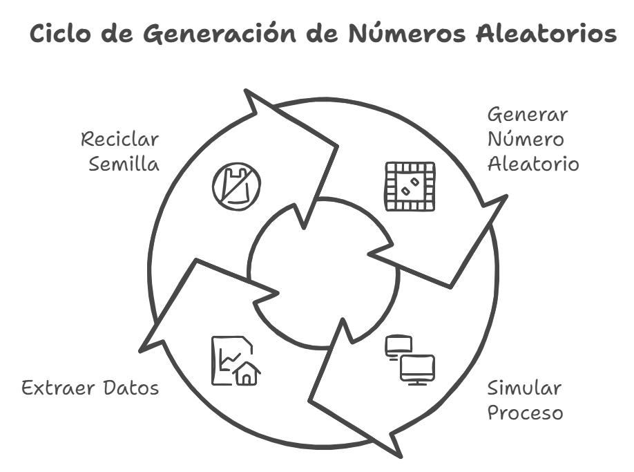
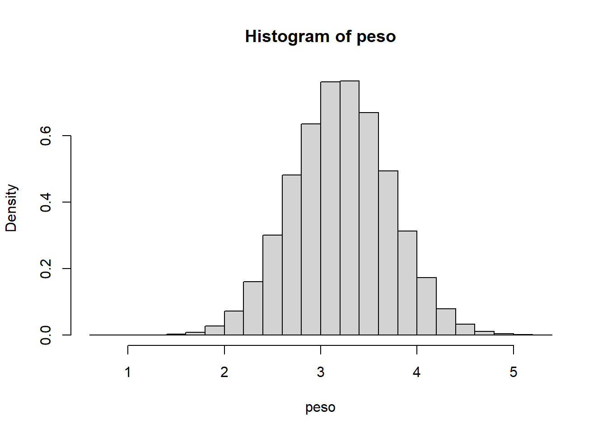
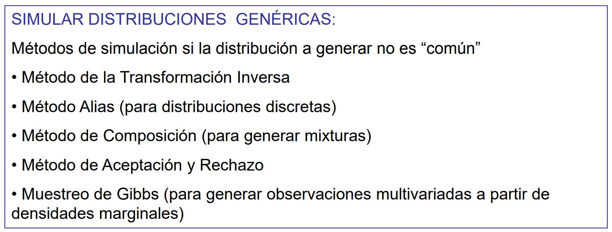

1. Introducción ✓
Problema que queremos solucionar: asignacion aleatoria de pacientes.
Cómo asignamos aleatoriamente pacientes a atratamientos.
+
Intentar replicar los datos reales.
En función de la información que tenemos los datos puede permitir ampliar el tamaño muestal o no.
Simular = imitar el comportamiento de una muestra.
What’s simular?
SIMULAR. Representar la realidad con un modelo.
Queremos es una simulación estocástica \(\Rightarrow\) Obtener diferentes “variedades” de una situacion donde el azar interviene. \(\Rightarrow\) Lo que se conoce como estimacion de Monte Carlo.
Un proceso estocástico es aquel cuyo comportamiento no es determinista, en la medida en que el subsiguiente estado del sistema se determina tanto por las acciones predecibles del proceso como por elementos aleatorios.
Una simulación de Monte Carlo es un modelo probabilístico que puede incluir un elemento de incertidumbre o aleatoriedad en su predicción. https://aws.amazon.com/es/what-is/monte-carlo-simulation/. Técnica numérica basada en conceptos y resultados probabilísticos que consigue IMITAR un fenómeno (situación o sistema) real. Obvio que no tenemos la certeza de cuál va a ser el fenómeno, hay incertidumbre.
La simulación es la antítesis de los modelos teóricos en el sentido de que la simulación no duda nunca porque ya no tiene probabilidades, tiene datos. La simulación no echa cuentas, da resultados (pa’ echar cuentas ya tengo el modelo teórico).
Para simular un modelo tengo que basarme en un modelo teórico. Si quiero hacer simulaciones de la realidad debo conocer el comportamiento teórico del modelo. E identificar qué partes de ese modelo depende del azar y cuáles no. Esos cambios aleatorios impactados por el azar debo definirla como una variable aleatoria.
Por ello, no hablamos de muestras malas ni muestras buenas. Habrá simulaciones malas o simulaciones buenas.
Los números aleatorios que nos da el ordenador en realidad son números pseudoalatorios. Dado un valor inicial se consigue el siguiente número, y a partir del segundo el tercero, etc.
Planteamiento de un modelo de simulación:
- Desarrollar un modelo que represente la situación real que se quiere investigar.
- Identificar qué partes o fases de la situación real cambian aleatoriamente. (sexo del bebé)
- Describir los cambios aleatorios con variables aleatorias. (Sexo: {XX, XY}, p(XX)=0.5)
- Generar observaciones aleatorias del sistema investigado.
- Validar el modelo simulado comparando los valores simulados con las observaciones reales.
La simulación tiene dos fases:
1. Simulación de un valor aleatorio.
2. Dado valor aleatorio asignar el valor simulado.
Condiciones de una simulación
- Que sea rápida (que la generacion de números aletorios sea rápida)
- Los números aleatorios generados se distribuyan entre 0-1
- Los números aleatorios generados se repartan por igual entre 0-1
- Los números aleatorios parezcan independientes
- Los números generados no son independientes, ya que dada una semilla siempre recreo la misma sucesión de números aleatorios. H0: necesitamos que esos números pseudoaletorios parezcan independietes (ya que sabemos que no lo son
Ejemplo
Realizar una asignación aleatoria del sexo de un bebé. Conocido el sexo vamos a simular el peso de cada bebé.
Criterio: dado un número aleatorio (entre 0-1) elegir el sexo del bebé. Quiero que ambos elementos tengan la misma probabilidad (divido el intervalo en dos partes iguales)
La base de mi modelo teorico:x = sexo del bebé y = peso del bebé (kg)
Quiero generar varios bebés.
(x1, peso_1)
(x2, peso 2)
Para cada bebé tengo sexo y peso (muestras paradas pero independencia entre las observaciones).
p(X=varón) = 0.5 = p(x=hembra)
peso | x=varón ~ N(3.266, 0.514)
peso | x=hembra ~ N(3.155, 0.495)
- Genero un número aleatorio.
- Hago una simulación.
- Saco los datos simulados.
- Reciclo semilla.

Tengo dos variables que simular.
- Un número aleatorio para simular la primera variable.
- Otra variable que no conozco pero que está condicionada. Otro número para simular para la otra variable.
cat("Números aleatorios:", U, "\n")Números aleatorios: 0.7621414 0.3668522 0.3111475 0.6270264 0.07654514 0.7816305 cat("Sexo:", sexo, "\n")Sexo: mujer varon varon mujer varon mujer cat("Peso:", peso, "\n")Peso: 3.913199 3.536088 2.989453 3.101755 2.76329 3.636893 n=100000; set.seed(20175)
U=runif(n,min=0,max=1)
p=0.5;
peso=numeric(n);
sexo=character(n);
for(i in 1:n) {
if (U[i]<p){
pp=rnorm(1,3.266,0.514)
peso[i]=pp
sexo[i]="varon"
} else {
pp=rnorm(1,3.155, 0.495)
peso[i]=pp
sexo[i]="mujer"
}
}
# Histograma muestral n=100000
hist(peso,freq=FALSE)
Muy bien mijo, ¿pero y si tengo que simular algunas de las distribuciones no conocidas?
Existen métodos generales para ello. Si tengo que simular distribución conocida estoy ok. Si tengo que generar una variable desconocida entonces tendré que crearla por distintos métodos.

La pregunta es, ¿qué nrum le pongo?